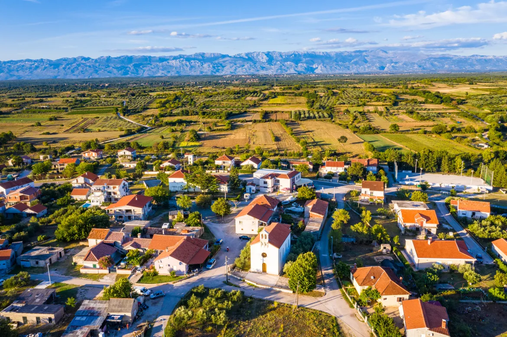
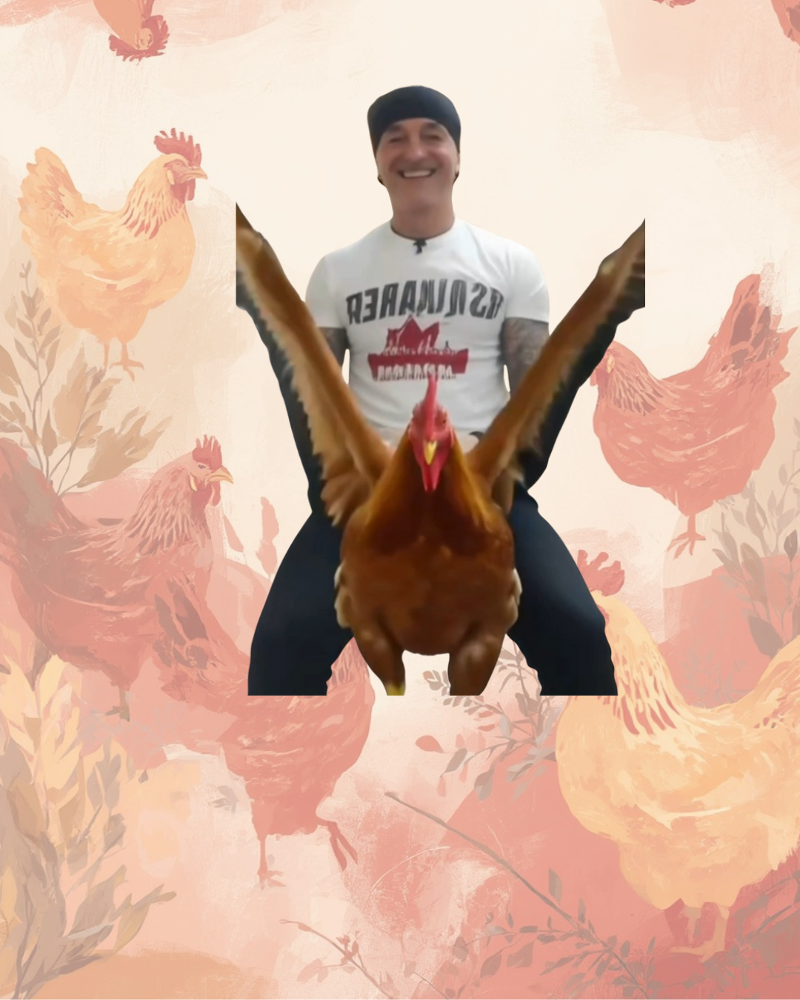

Više privatnika nego stanovnika
Mudrologije
U Briševu se rađa sve manje djece, ali zato uredno niču obrti, firme i pečati na svakoj adresi.
Otvori članakSatirični list mjesta
Komentar
Rubrika sada okuplja Darkovu seosku dramu i novu priču o Briševu koji uredno broji više privatnika nego stanovnika.

Mudrologije
U Briševu se rađa sve manje djece, ali zato uredno niču obrti, firme i pečati na svakoj adresi.
Otvori članak
Mudrologije
Štand čeka jaja, a selo prati najveću krizu njegove karijere dok kokoši odbijaju suradnju.
Otvori članak